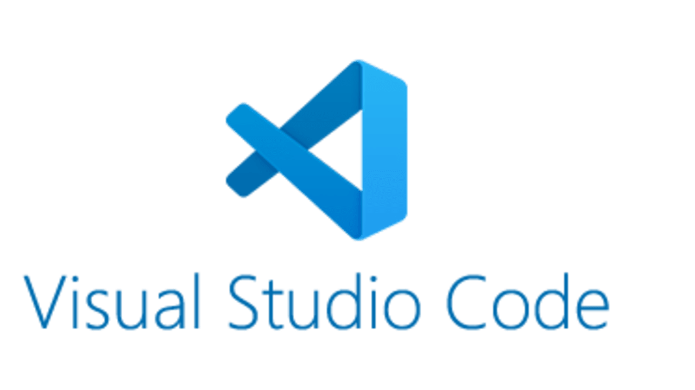

Mi az az integrált fejlesztői környezet (integrated
development environment - IDE)?
Az integrált fejlesztői környezet (IDE) egy
olyan szoftveralkalmazás, amely segít a
programozóknak a szoftverkód hatékony
fejlesztésében. Növeli a fejlesztők
termelékenységét azáltal, hogy egy könnyen
használható alkalmazásban egyesíti az olyan
funkciókat, mint a szoftverszerkesztés, az
építés (building), a tesztelés és a csomagolás
(packaging).
Az integrált fejlesztői környezet egy olyan
szoftveralkalmazás, amely átfogó eszközöket
biztosít a számítógépes programozók számára a
szoftverfejlesztéshez. Az IDE általában legalább
egy forráskódszerkesztőből, automatizálási
eszközökből és hibakeresőből áll.
Egyes IDE-k, mint például a NetBeans és az
Eclipse, tartalmazzák a szükséges fordítót,
értelmezőt vagy mindkettőt; mások, mint például
a SharpDevelop és a Lazarus, nem.
Milyen ingyenes IDE-k vannak webszerkesztéshez? Visual
Studio Code.

A Visual Studio Code ingyenes, nyílt forráskódú
kódszerkesztő, melyet a Microsoft fejleszt
Windows, Linux és macOS operációs rendszerekhez.
Támogatja a hibakeresőket, valamint beépített
Git támogatással rendelkezik, továbbá képes az
intelligens kódkiegészítésre az IntelliSense
segítségével.
A Visual Studio Code egy újradefiniált és modern
webes és felhőalkalmazások létrehozására és
hibakeresésére optimalizált kódszerkesztő.
Milyen ingyenes IDE-k vannak webszerkesztéshez? Brackets.
A Brackets egy ingyenes és nyílt forráskódú
forráskód-szerkesztő, amely elsősorban a
webfejlesztésre összpontosít.
A fókuszált vizuális eszközökkel és az
előfeldolgozó támogatásával a Brackets egy
modern szövegszerkesztő, amely megkönnyíti a
tervezést a böngészőben. Az alapoktól kezdve
webtervezők és front-end fejlesztők számára
készült.